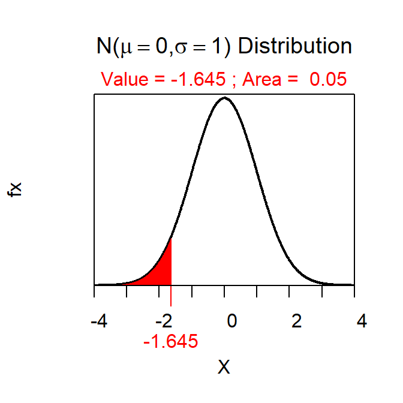

The required sample size to estimate a population mean within a prescribed margin-of-error (ME) and level of confidence with a given value of σ (the population standard deviation) can be computed with \(\big(\frac{Z^{*}\sigma}{ME}\big)^2\).
For example, suppose that a researcher wanted to determine the sample size required to estimated the population mean within 10 “units” with 90% confidence assuming that σ=500. In this case, ME=10 (which comes from the prescribed “within” amount) and σ is obviously 500. Assuming a 90% confidence INTERVAL (i.e., 90% is in the “middle” of a standard normal distribution and 5% is in either tail) Z* is either -1.645 or +1.645 (does not make a difference as it will be squared in the sample size calculation) as computed with
> distrib(0.05,type="q")
Therefore, the required sample size is \(\big(\frac{1.645*50}{10}\big)^2\)=82.25. It is, of course, not possible to take a fraction of a sample size but note that sample size calculations are ALWAYS rounded up. Thus, in this example, one would take a sample size of 83 to meet the prescribed requirements.